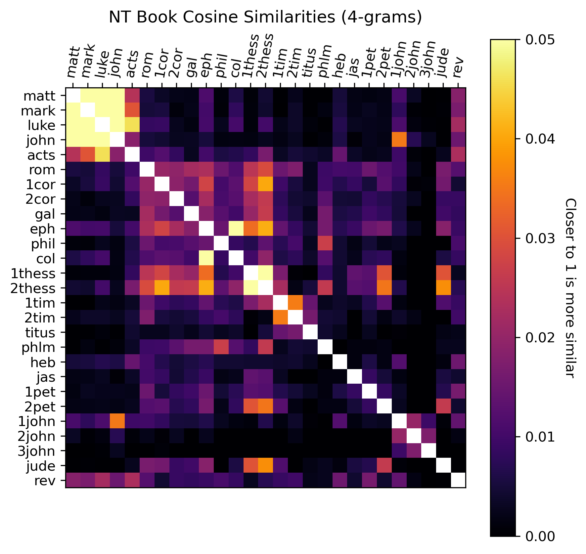
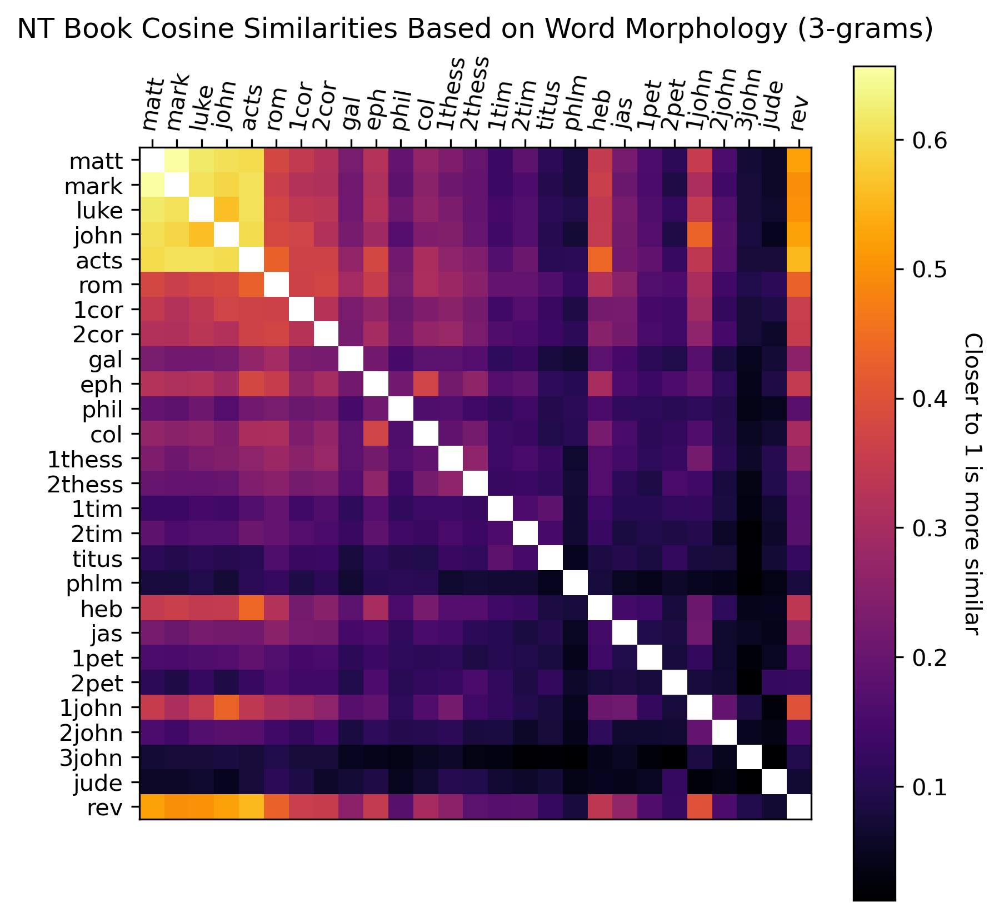

Some Statistics on the Greek New Testament
November 21, 2024
Introduction
The New Testament (NT) Scriptures were written during the first century AD in
Koine Greek. (This was the lingua franca of the Hellenistic world, which
included Palestine, Asia Minor, and Greece.) They are composed of 27 books
in total:
The Four Gospels (Jesus biographies) and the Acts of the Apostles (a
history of the early church and the missionary journies of Paul)
- Matthew
- Mark
- Luke
- John
- Acts
The Pauline Epistles (letters to churches and individuals authored by
the Apostle Paul)
- Romans
- 1 Corinthians
- 2 Corinthians
- Galatians
- Ephesians
- Philippians
- Colossians
- 1 Thessalonians
- 2 Thessalonians
- 1 Timothy
- 2 Timothy
- Titus
- Philemon
The General Epistles (letters to churches by other authors)
- Hebrews
- James
- 1 Peter
- 2 Peter
- 1 John
- 2 John
- 3 John
- Jude
Apocalyptic Literature
One of the biggest questions about the NT is the authorship of
each book. Only some books explicitly mention the name of the author:
(all the Pauline epistles, James, 1 and 2 Peter, Jude, and Revelation).
In other books, the author only hints at his identity (i.e. the Gospel of
John, Luke-Acts[?], and 2 and 3 John). The rest are anonymous, and the
authors are known only through the name of the book, as it was transmitted
throughout the early church. (The only exception is Hebrews, whose author
was unknown even to the early church.)
With the exception of Hebrews, the traditional authorships were mostly
uncontested until the nineteenth century, when scholars began to reject
the traditionally understood authorship for almost all the books of the
NT (with the exception of some of the core Pauline epistles.)
Scholars began to suggest that many of the NT books were not
written by the apostles themselves (or associates of the apostles, like
Mark and Luke), but rather by Christians later in the early second century
writing pseudonymously under the names of the apostles. Although many of
these claims are difficult to defend due to the lack of concrete evidence
and the speculative nature of their arguments, this understanding of
non-traditional authorship remains the predominant view in more liberal
scholarly circles.
Modern computational techniques can shed light on some of these claims.
The goal of this exercise is to see whether there are statistically
identifiable stylistic differences between the books of the Greek NT.
Dataset
For my text base, I am using the public-domain 1904 edition of the Greek
NT edited by Eberhard Nestle, which can be found as a .csv file
here.
Each word corresponds to one line, which contains the book/chapter/verse,
the Greek text, the word's morphology (noun or verb, nominative or accusative,
indicative or participle, etc.), the Strong's number, and the lemma (or root).
As an example, here is a quick look at the data for John 3:16.
| Greek |
Morphology |
Strong's Number |
Lemma |
Gloss |
| Οὕτως |
ADV |
3779 |
οὕτω |
thus/so/in this way |
| γὰρ |
CONJ |
1063 |
γάρ |
For |
| ἠγάπησεν |
V-AAI-3S |
25&5656 |
ἀγαπάω |
loved |
| ὁ |
T-NSM |
3588 |
ὁ |
(the) |
| Θεὸς |
N-NSM |
2316 |
θεός |
God |
| τὸν |
T-ASM |
3588 |
ὁ |
the |
| κόσμον, |
N-ASM |
2889 |
κόσμος |
world |
| ὥστε |
CONJ |
5620 |
ὥστε |
that/so that |
| τὸν |
T-ASM |
3588 |
ὁ |
(the) |
| Υἱὸν |
N-ASM |
5207 |
υἱός |
Son |
| τὸν |
T-ASM |
3588 |
ὁ |
(the) |
| μονογενῆ |
A-ASM |
3439 |
μονογενής |
only begotten |
| ἔδωκεν, |
V-AAI-3S |
1325&5656 |
δίδωμι |
he gave |
| ἵνα |
CONJ |
2443 |
ἵνα |
so that |
| πᾶς |
A-NSM |
3956 |
πᾶς |
all |
| ὁ |
T-NSM |
3588 |
ὁ |
(the) |
| πιστεύων |
V-PAP-NSM |
4100&5723 |
πιστεύω |
who believe |
| εἰς |
PREP |
1519 |
εἰς |
in |
| αὐτὸν |
P-ASM |
846 |
αὐτός |
him |
| μὴ |
PRT-N |
3361 |
μή |
not |
| ἀπόληται |
V-2AMS-3S |
622&5643 |
ἀπόλλυμι |
may perish |
| ἀλλ’ |
CONJ |
235 |
ἀλλά |
but |
| ἔχῃ |
V-PAS-3S |
2192&5725 |
ἔχω |
may have |
| ζωὴν |
N-ASF |
2222 |
ζωή |
life |
| αἰώνιον. |
A-ASF |
166 |
αἰώνιος |
eternal |
(The glosses are not part of the dataset; I have added them here for clarity.)
As you can see, there is a wealth of grammatical data at our disposal.
A quick look at κόσμον shows us that we have a
Noun in the
Accusative case,
Singular number, and
Masculine
gender.
A quick look at ἠγάπησεν shows us that we have a
Verb in the
Aorist tense,
Active voice,
Indicative mood,
3rd
person
Singular.
Cosine Similarity
Cosine similarity is a way of measuring the similarity between two texts,
irrespective of their size. Taking each text as a vector $\textbf{a}$, whose elements
are each word's frequency of appearance, then the cosine similarity is
$$\cos\theta = \dfrac{\textbf{a}_1 \cdot \textbf{a}_2}{|\textbf{a}_1||\textbf{a}_2|}.$$
Two texts that are identical will have a cosine similarity of 1. Two texts
that don't have any words in common will have a cosine similarity of 0.
One may observe that due to the relatively large size of each NT book,
the factors that contribute most significantly to the cosine similarity
will be the most common words, which are mostly particles, conjunctions,
and prepositions. Therefore, this metric, used on larger corpuses of text,
highlights more of the stylistic and not topical similarities.
For instance, the top three most common words in Matthew are ὁ (the), καί (and),
and αὐτός (he), which occur 2775, 1169, and 909 times respectively. The top
three most common words in Romans are ὁ (the), καί (and), and ἐν (in), which
occur 1103, 273, and 173 times respectively.
Counting the frequency at which each word appears in each book of the NT
(based on Strong's numbers, which does not separate between different
grammatical forms of the same word), the cosine similarities are as follows:
Several points are worth noting. As expected, we see a high degree of
correspondence between the Synoptics (Matthew, Mark, and Luke-Acts), and
the Gospel of John to a slightly lesser extent. As expected, we also see
a strong match between Colossians and Ephesians, which are very similar
letters.
Interesting, Philemon shows a lot of dissimilarity to almost all of the other
NT books, despite being almost universally accepted as a genuine work
by Paul. Furthermore, we might be surprised to see that there is not a stronger
correspondence within the Johannine books (John, 1/2/3 John, and Revelation)
despite their notable stylistic similarities.
$n$-gram Cosine Similarity
Going a step further, we can look at not only words, but also
phrases
that are shared between the books of the New Testament.
Instead of analyzing the text by word frequencies, we can look at $n$-gram
frequency, where an $n$-gram is simply a string of words with length $n$.
For example, the sentence "I woke up late today" consists of the three
3-grams: "I woke up", "woke up late," and "up late today."
The three most common 3-grams (including grammatical variations) in Matthew
are ὁ βασιλεία ὁ (e.g. ἡ βασιλεία τῶν [οὐρανῶν] - the kingdom of heaven),
δέ γεννάω ὁ (used in the opening genealogy), and ὁ υἱός ὁ (e.g. ὁ υἱός τοῦ ἀνθρώπου -
the Son of Man).
These occur 40, 37, and 33 times respectively.
The three most common 3-grams in Romans are ὁ κύριος ἐγώ (e.g. Ἰησοῦ
Χριστοῦ τοῦ Κυρίου ἡμῶν - Jesus Christ our Lord), ὁ θεός ὁ (e.g. "God" followed
by another noun with the article), and ὁ νόμος ὁ (e.g. "the law" followed
by another noun with the article). These occur 12, 10, and 9 times respectively.
Looking at 3-gram cosine similarities between the NT books, we find:
The same as above with the color scale changed.
Here, we see a much closer relationship between the Gospels and Acts.
Notably, we also see that the most similar book to Acts is Luke, as anticipated.
We see, again, a close relationship between Ephesians and Colossians, a lot
of similarity between the Thessalonian letters, similarity between John and
1 John, and a generally high degree of correspondence between the Pauline
epistles up to 2 Thessalonians. As expected, 2 Peter and Jude also show
similarity.
Some unexpected points are that Revelation shows more similarity to Luke-Acts
than to John. Interestingly, Hebrews and Revelation have much in common.
We may also note that Hebrews shares the most in common with Luke-Acts out
of all the Gospels (could Luke have written Hebrews?).
Similar results can also be observed when analyzing 4-grams:

$n$-gram Cosine Similarity with Word Morphology
One problem is that as we look at $n$-grams for increasingly larger $n$, our similarity index is more sensitive towards the specific topic matter, rather than capturing stylistic differences. Furthermore, grammatical patterns that extend past two or three words are impossible to capture. For one, the grammatical morphology is each word is not being considered here (each word is condensed into its lemma). But also, two $n$-grams won't match unless they share the exact same words, even if they have the same grammatical pattern.
Luckily, we have morphological tags for each word that allow us to figure out what part of speech each word is. By collecting $n$-grams of these morphological tags, we can detect grammatical patterns that are common among the books of the NT.
For example, the most common morphological 3-gram in Matthew is PREP T-ASF N-ASF (preposition, accusative singular feminine particle, accusative singular feminine noun), which occurs 83 times. The most common morphological 3-gram in Romans is PREP T-GSF N-GSF (preposition, genitive singular feminine particle, genitive singular feminine noun), which occurs 26 times.
Here are the results for 1-grams, 2-grams, and 3-grams:

{kind=link}
{kind=link}
{kind=link}
{kind=link}
{kind=link}
{kind=link}
{kind=link}